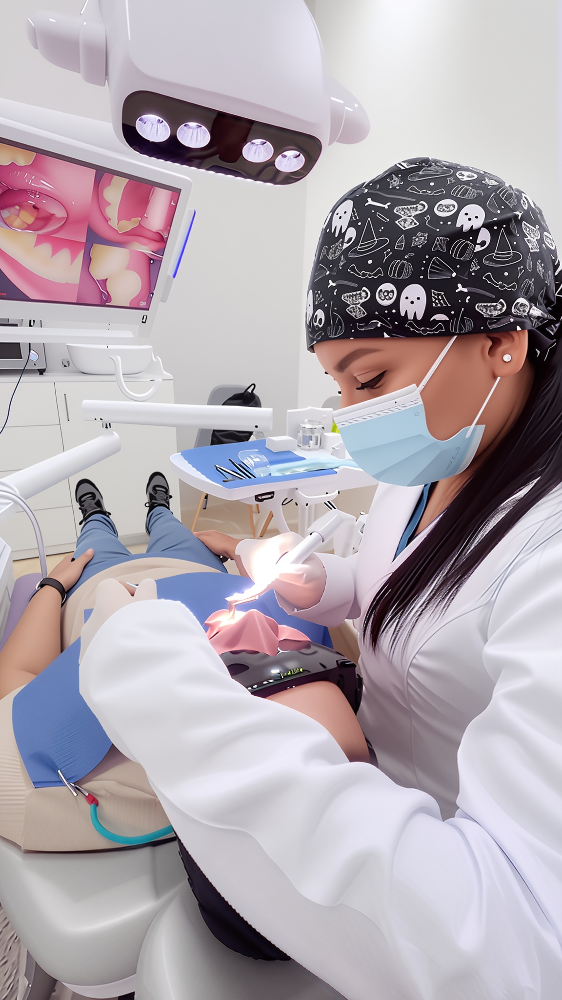
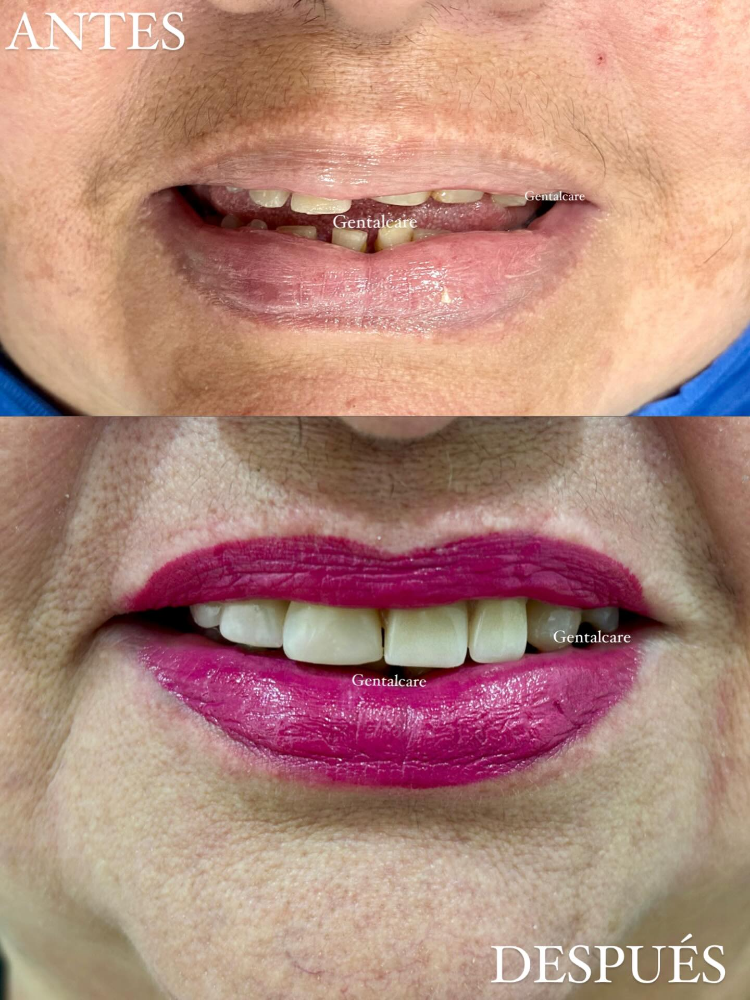
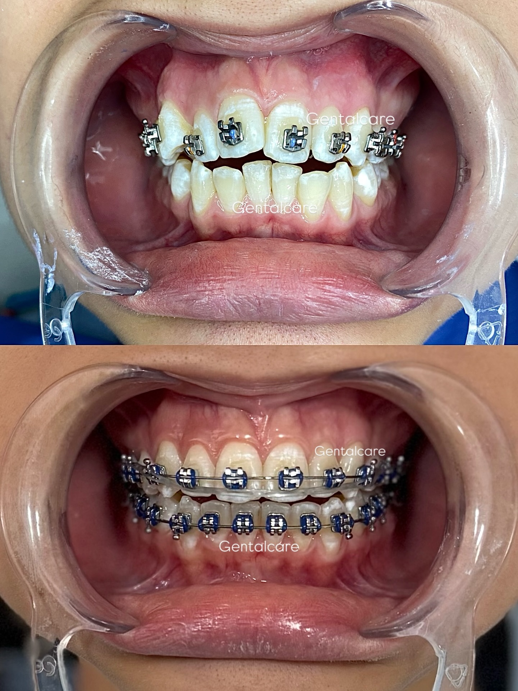
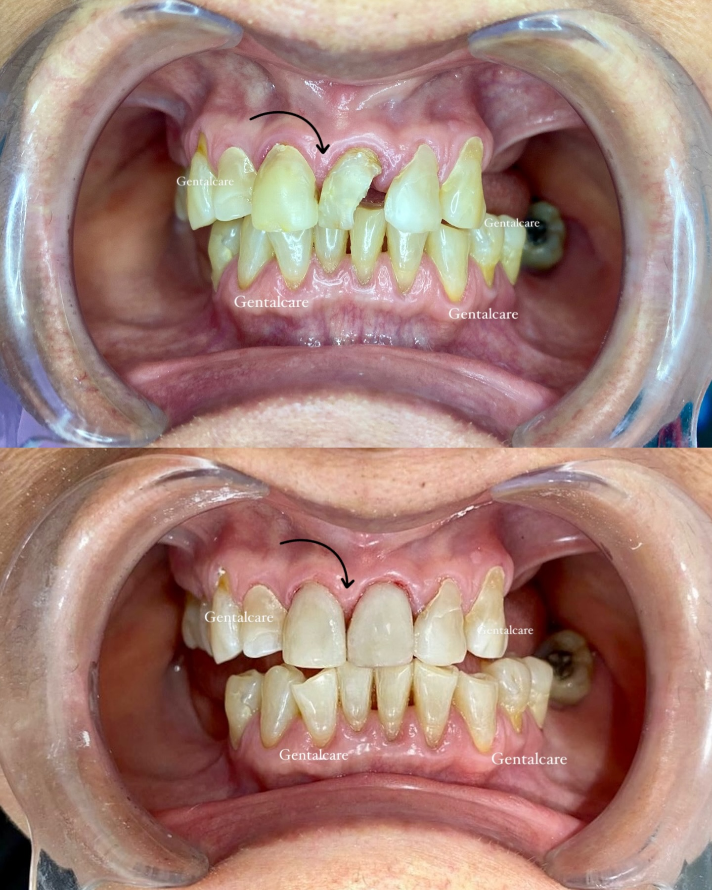

Experimenta un enfoque exclusivo y personalizado en el cuidado de tu salud oral y estética facial en Gental Care con la Dra. Genesis GB.

Con más de una década de dedicación al cuidado clínico, la Dra. Genesis GB lidera Gental Care con una visión de "Cuidado Refinado". Se especializa en fusionar la excelencia odontológica con la estética facial para diseñar sonrisas saludables y rostros armoniosos.
Su compromiso con el paciente va más allá del sillón dental. En Gental Care creemos que cada persona merece una experiencia personalizada y sin estrés en un entorno privado y confortable que evoque paz y tranquilidad.
Procedimientos detallados y personalizados de odontología y armonización facial en Gental Care para devolver la funcionalidad y realzar tu belleza.
Alineación dental mediante sistemas avanzados, incluyendo alineadores transparentes y brackets tradicionales para una sonrisa perfecta y funcional.
Aplicación de toxina botulínica en arrugas dinámicas para un rejuvenecimiento facial integral. Suaviza líneas de expresión en frente, entrecejo y patas de gallo manteniendo la naturalidad de tu rostro.
Restauraciones protésicas fijas y removibles fabricadas con materiales biocompatibles de la más alta calidad, diseñadas para devolver la fuerza de tu mordida.
Restauraciones estéticas diseñadas a la medida del diente dañado. Reemplazan la estructura perdida manteniendo al máximo el tejido dental sano.
Solución protésica parcial removible de precisión, diseñada meticulosamente para rellenar espacios edéntulos ofreciendo alta comodidad y excelente retención.
Sistema clínico avanzado de aclarado dental para eliminar manchas y restaurar la vitalidad del esmalte de forma rápida y completamente segura.
Agenda una consulta inicial de evaluación en Gental Care con la Dra. Genesis GB. Analizaremos tu caso con tecnología de vanguardia.
Resultados reales de nuestros pacientes en Gental Care antes y después del tratamiento por la Dra. Genesis GB.



Visítanos en nuestro centro odontológico Gental Care. Estamos convenientemente ubicados con accesibilidad vehicular y atención personalizada.
Alborada 4ta Etapa Mz FS Villa 1, junto a Farmacia del Norte. Guayaquil, Ecuador
map Abrir en Google Maps (2°08'19.8"S 79°53'33.7"W)Lunes a Viernes: 9:30 AM - 7:00 PM
Sábados: 10:00 AM - 4:00 PM
Domingos: Cerrado